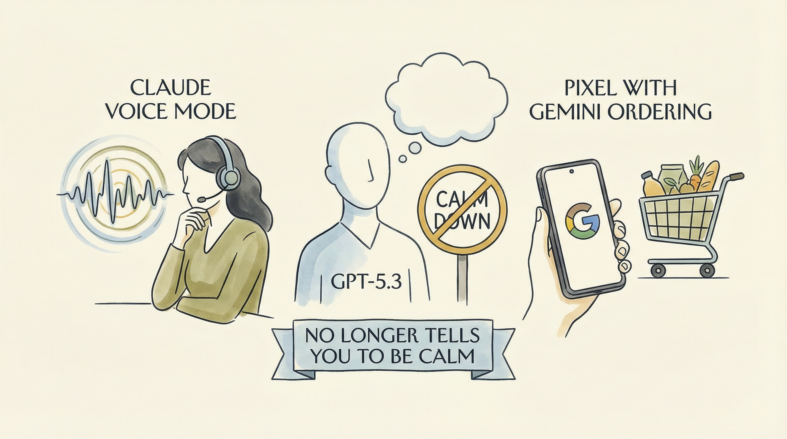

Anthropic推出Claude Code的语音模式，加强AI编码能力。
两克伴AIGC日报
2026-03-04 星期三

本期关注：AI工具持续升级，Claude Code推出语音模式、ChatGPT新模型减少安抚提示，Gemini实现groceries订购；Webact解决AI代理token高效浏览器控制，软件工程领域Claude Code成主流，Gemini 3.1 Flash-Lite提供思维模式选择，企业...
📰 行业动态
ChatGPT发布新GPT-5.3 Instant模型，减少用户不适。
谷歌Pixel手机更新，Gemini AI助手可订购 groceries。
新闻集团与Meta达成多年期AI授权协议，费用高达5000万美元。
🔥 今日焦点
Show HN: Webact 是一款由kxbnb开发的浏览器控制工具，专为AI代理设计，旨在解决在浏览器控制中常见的token使用问题。在实验LLM代理的浏览器控制时，作者发现大多数工具通过Playwright返回庞大的可访问性树或DOM快照，导致token消耗迅速增加。Webact采用了一种更为简洁的方法，它通过DevTools Protocol直接与Chrome通信，并返回一个简短的“页面摘要”。
Webact的核心优势在于其轻量级的设计。它仅包含一个约196KB的JS文件，无任何依赖，且能够利用用户现有的Chrome会话。这种设计不仅降低了资源消耗，还提高了效率。
《2026年软件工程师的AI工具》一文，由Gergely Orosz撰写，基于900多位受访者的独家数据和深入分析，揭示了当前AI工具在软件工程领域的应用现状。文章指出，Claude Code成为工具使用的主流，领导者对AI的积极态度超过工程师，而员工和工程师成为AI代理的最大用户群体。这一研究对于AI领域的从业者具有重要意义，不仅揭示了AI工具在软件开发中的应用趋势，也为企业如何更好地利用AI技术提供了有益的参考。随着AI技术的不断发展，了解AI工具在软件工程中的应用现状，有助于推动AI与软件工程的深度融合，提升软件开发效率和质量。
---
Gemini 3.1 Flash-Lite，作为云服务提供商的最新模型，旨在解决企业开发者面临的关键挑战。该模型通过提供不同层次的思维模式，以更好地适应具体任务的需求。这一创新举措对于AI领域具有重要意义。
在当前AI技术飞速发展的背景下，如何高效处理输入数据成为制约企业发展的瓶颈。Gemini 3.1 Flash-Lite通过引入多样化的处理方式，为开发者提供了更多选择。这不仅有助于提高数据处理效率，还能根据不同任务需求，实现更精准的AI应用。
近日，一场围绕人工智能（AI）监管的国会竞选战正在激烈展开。据报道，一家由科技亿万富翁支持的超级政治行动委员会（PAC）正投入1.25亿美元，旨在削弱那些主张AI监管的候选人。纽约州候选人亚历克斯·博尔斯（Alex Bores）便是其中之一，他曾是科技行业的资深高管。
这一事件的重要性在于，它揭示了科技行业内部对于AI监管态度的分歧。随着AI技术的快速发展，其潜在风险和伦理问题日益凸显，因此加强监管成为公众和政府关注的焦点。博尔斯等候选人主张通过立法手段对AI进行监管，以保障公众利益和行业健康发展。
📚 深度长文
Google最新发布的模型更新为Flash-Lite系列，名为Gemini 3.1 Flash-Lite。该模型在成本上具有显著优势，输入成本仅为0.25百万令牌，输出成本为1.5百万令牌，仅为Gemini 3.1 Pro的八分之一。Gemini 3.1 Flash-Lite支持四种不同的思考层级，能够输出多样化的内容。文章通过实例展示了其输出四种不同风格的“鹈鹕”图像，体现了模型在风格多样性上的能力。此文章对于AI从业者而言，不仅揭示了Google在模型成本优化上的努力，也展示了其在多风格生成方面的独特见解，对于理解AI模型在创意应用中的潜力具有重要意义。阅读此文章，读者可以深入了解Gemini 3.1 Flash-Lite的性能和成本效益，以及其在多风格生成领域的应用潜力。
---
《最新开放性成果（#19）：Qwen 3.5、GLM 5、MiniMax 2.5——中国实验室对AI前沿的最新推进》一文深入探讨了我国AI领域的最新进展。文章核心观点在于，中国实验室在AI领域取得了显著突破，推出了Qwen 3.5、GLM 5、MiniMax 2.5等创新成果，展现了我国在AI前沿的强大实力。
文章通过详实的数据和案例，论证了中国实验室在AI领域的突破性进展。Qwen 3.5在自然语言处理领域取得了卓越成绩，GLM 5在机器学习领域实现了突破，MiniMax 2.5则在强化学习领域取得了显著进展。这些成果不仅展示了我国AI技术的创新实力，也为全球AI领域的发展提供了有力支持。
本文深入探讨了MIT Technology Review Insiders Panel的讨论内容，核心观点聚焦于人工智能领域的最新发展趋势和潜在挑战。作者Courtney Dobson通过分析多位行业专家的见解，揭示了人工智能在医疗、教育、金融等领域的广泛应用及其对人类生活的影响。
文章关键论据包括：1）人工智能在医疗领域的应用前景，如辅助诊断、个性化治疗等；2）人工智能在教育领域的创新应用，如智能教学、个性化学习等；3）人工智能在金融领域的风险管理、投资决策等方面的作用。同时，作者还指出人工智能在发展过程中面临的伦理、隐私和数据安全等问题。
📄 重点论文
**核心贡献**: 提出了一种通过铅笔谜题评估大型语言模型推理能力的基准，这些谜题与NP完全问题密切相关，具有确定性、步骤级验证的特点。
**与AI Agent的关联**: 为AI Agent的推理能力评估提供了新的基准，有助于推动AI Agent在复杂推理任务上的发展。
**核心贡献**: 提出了一种基于大型语言模型的查询处理方法，通过合成而非工程的方式，快速适应新技术和用户需求，并易于扩展。
**与AI Agent的关联**: 为AI Agent的查询处理能力提供了新的思路，有助于提升AI Agent在复杂查询环境下的表现。
**核心贡献**: 提出了一种基于LLM的规划解释框架，通过对话方式与用户交互，帮助用户理解潜在解决方案，提高对系统的信任。
**与AI Agent的关联**: 为AI Agent的交互式规划提供了新的方法，有助于提升AI Agent在复杂决策环境下的用户体验。
🛠️ 产品推荐
Limelight是一款开源SDK，旨在实时捕捉应用开发过程中的所有操作，并通过MCP将相关信息传递给AI编码助手。该产品解决了传统AI编码助手在调试时只能看到源文件，无法获取网络请求、状态变化、重渲染和时序等问题的困扰。Limelight能够全面捕捉应用中的网络请求、GraphQL操作、控制台日志、Zustand/Redux状态等，为AI编码助手提供真实证据，从而提高编码效率和准确性。
---
Show HN: Network-AI是一款AI框架整合工具，旨在解决多智能体系统中的常见问题。该产品通过在现有框架（如LangChain、CrewAI等）之上增加协调层，实现原子黑板共享、权限控制、预算限制等功能。Network-AI提供提案→验证→提交的工作流程，并配备AuthGuardian进行权限管理、FederatedBudget进行预算控制，以及12个即插即用适配器。无需API密钥，为技术从业者提供高效、灵活的AI框架整合解决方案。
---
VibeDiff是一款AI辅助工具，旨在防止Claude代码在更新过程中出现破坏性变更。通过分析代码差异，VibeDiff能够帮助开发者提前识别潜在风险，确保代码的稳定性和兼容性。该产品能够有效解决开发者在使用AI代码库时遇到的版本更新问题，提高开发效率和代码质量。VibeDiff的AI能力在于其智能分析算法，能够快速识别代码差异，为用户提供精准的变更预测和建议。